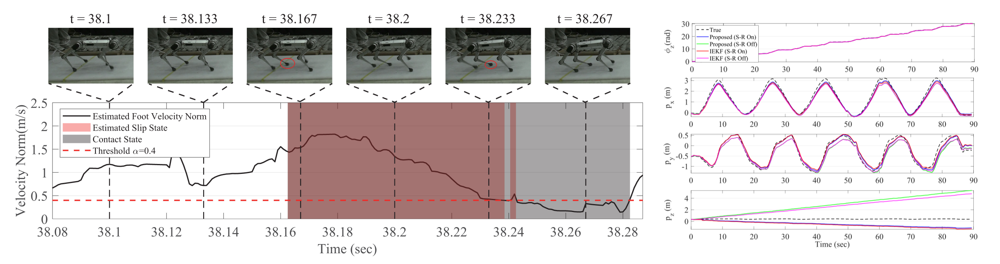

IEEE Robotics and Automation Letters, published online, 2021
Joon-Ha Kim (1) Seungwoo Hong (1) Gwanghyeon Ji (1) Seunghun Jeon (1) Jemin Hwangbo (1) Jun-Ho Oh (1) Hae-Won Park (1)
(1) Korea Advanced Institute of Science and Technology

Abstract
This letter presents a state estimation algorithm for the legged robot
by defining the problem as a Maximum A Posteriori (MAP) estimation problem
and solving the problem with the Gauss-Newton algorithm. Moreover, marginalization
by the Schur Complement method is adopted to make a fixed size problem. Each
component of the cost function and its Jacobian are derived utilizing the SO(3)
manifold structure, while we reparameterize the state with nominal state and variation
to make linear algebra and vector calculus applied properly. Furthermore, a slip
rejection method is proposed to reduce the erroneous effect of fault modeling of
kinematics models. The proposed algorithm is verified by comparison with the
Invariant Extended Kalman Filter (IEKF) in real robot experiments on various environments.
@ARTICLE{LeggedStateDynamicKim2021,
author={Kim, Joon-Ha and Hong, Seungwoo and Ji, Gwanghyeon and Jeon, Seunghun and Hwangbo, Jemin and Oh, Jun-Ho and Park, Hae-Won},
journal={IEEE Robotics and Automation Letters},
title={Legged Robot State Estimation With Dynamic Contact Event Information},
year={2021},
volume={6},
number={4},
pages={6733-6740},
doi={10.1109/LRA.2021.3093876}
}